Taste of Ilocos
Ilocano cuisine is widely celebrated as one of the most distinctive in the Philippines. Known for bold flavors, generous use of garlic and vinegar, and techniques perfected over centuries, food in Ilocos Sur is as much a cultural experience as it is a culinary one.
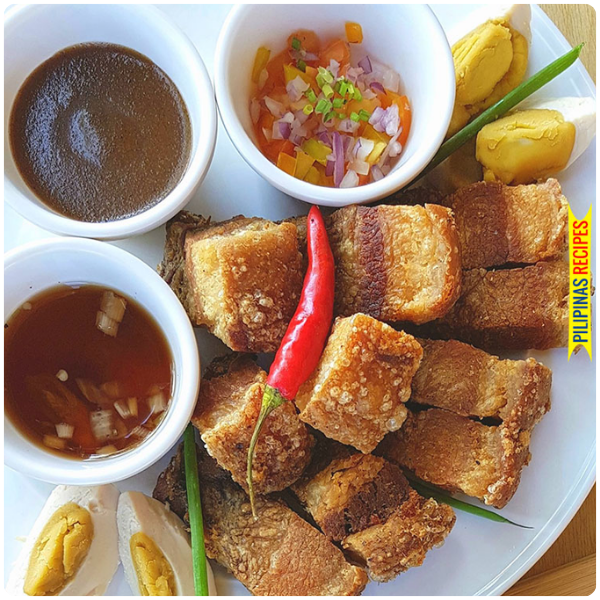
Featured Delicacy
Bagnet is the crown jewel of Ilocano cuisine — a double-fried pork belly that achieves an extraordinarily crispy skin while remaining tender and juicy inside. Unlike ordinary lechon, bagnet is boiled first in seasoned water, then deep-fried not once but twice to achieve its signature crunch.
It is typically served with a dipping sauce of sukang Iloko (Ilocano sugarcane vinegar), garlic, and onions, and paired with pinakbet or warm rice. Once you taste authentic bagnet in Ilocos Sur, no other version elsewhere will ever satisfy.
Featured Delicacy
Vigan longganisa is perhaps the most famous sausage in the Philippines. Unlike the sweet longaniza found elsewhere in the country, Vigan's version is decidedly savory — packed with minced pork, generous amounts of garlic, black pepper, and a distinctive sour note from sukang Iloko vinegar.
The sausages are traditionally linked in long chains and cooked in their own fat until caramelized and deeply fragrant. A classic Vigan breakfast consists of longganisa, sinangag (garlic fried rice), and a fried egg — the ultimate Filipino comfort meal elevated to an art form.
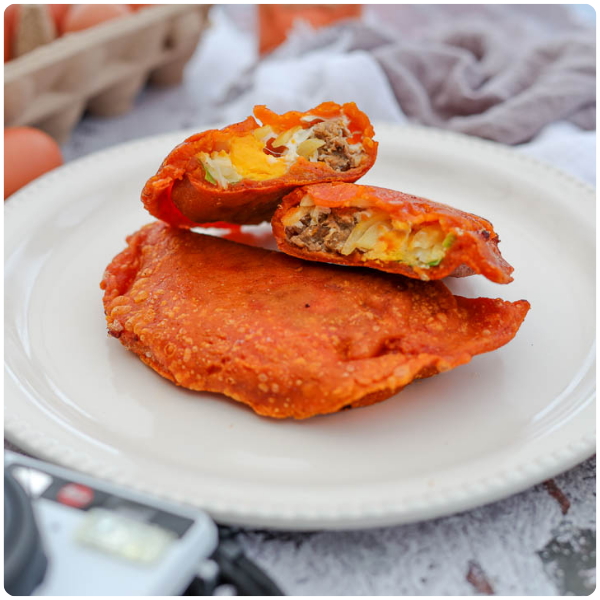
Featured Delicacy
The Ilocano empanada is one of the most distinctive snacks in the Philippines. Unlike the baked Spanish empanada, the Ilocano version is deep-fried in its characteristic bright orange rice flour shell — the color coming from achuete (annatto) seeds — until it's shatteringly crispy on the outside.
Inside, it's filled with a savory mixture of grated green papaya, Vigan longganisa, and a whole raw egg that cooks inside the empanada as it fries. The result is a perfect handheld snack — crispy, hearty, and bursting with Ilocano flavors. Served with Ilocano sukang iloko for dipping.
Featured Delicacy
Pinakbet (also called pakbet) is the quintessential Ilocano vegetable dish — a hearty stew of mixed vegetables including bitter melon (ampalaya), eggplant, okra, squash, sitaw (string beans), and tomatoes, flavored with bagoong (fermented shrimp paste) and pork or bagnet.
The authentic Ilocano pinakbet uses bagoong isda (fermented fish paste) rather than the shrimp paste used in other regions, giving it a distinctly earthy, complex umami depth. When topped with chunks of crispy bagnet, it becomes an extraordinarily satisfying meal that represents the Ilocano approach to cooking: simple ingredients, bold flavors.
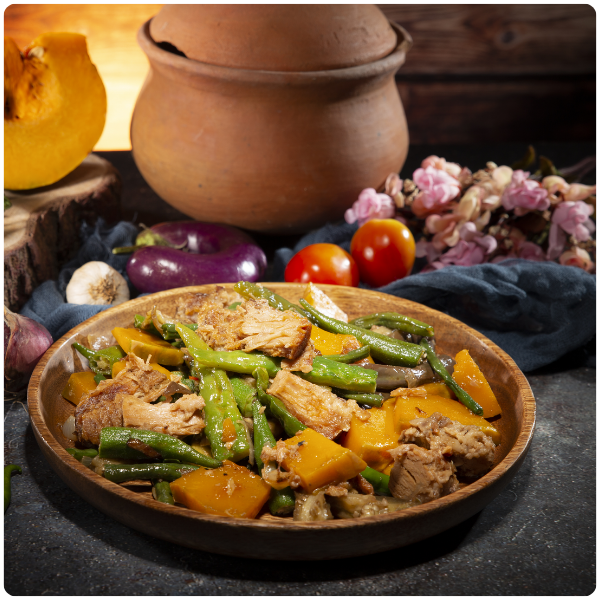
More to Taste
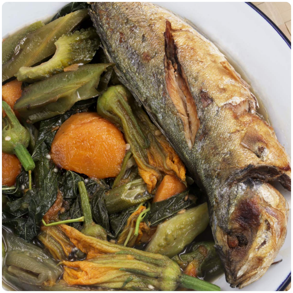
A light Ilocano vegetable soup flavored with bagoong isda. Healthier than pinakbet — vegetables are simply boiled in a savory fish-paste broth. A staple in every Ilocano home.
Local carinderias throughout the province
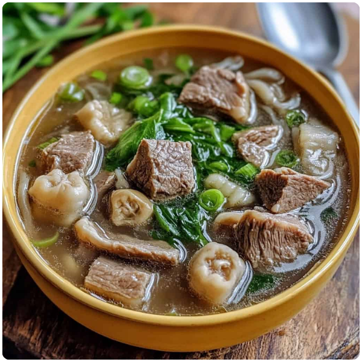
A bold Ilocano beef soup made with innards, ginger, onion, and vinegar. An acquired taste that locals swear by — especially popular during fiestas and early morning markets.
Vigan Public Market, eateries near Plaza Burgos
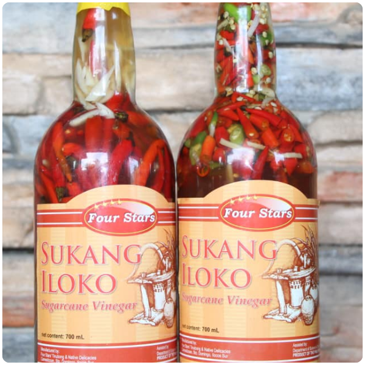
Ilocos Sur's iconic sugarcane vinegar fermented in burnay clay jars. The essential condiment of Ilocano cooking — mellow, complex, and the perfect dip for empanada and bagnet.
Vigan market, roadside stalls, Rowenas pasalubong shops
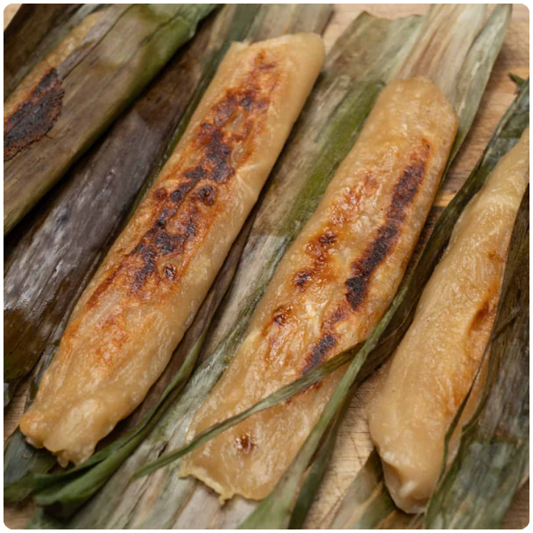
A sweet sticky rice snack wrapped in banana leaves and grilled over charcoal. Filled with coconut and sugar, it has a smoky, chewy bite that makes it one of Ilocos Sur's most beloved street snacks.
Roadside stalls along the national highway, Candon City
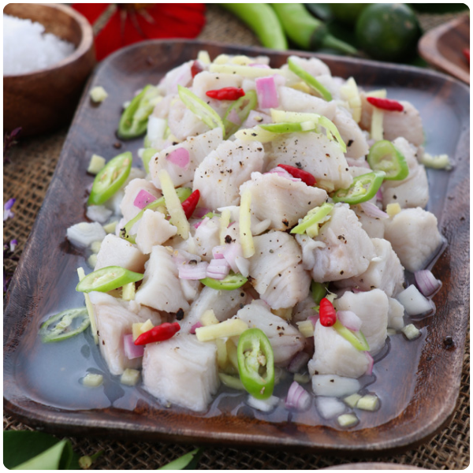
Ilocos Sur's version of kinilaw — fresh fish or goat meat cured in sukang Iloko with onions, ginger, and chili. Tangy, fresh, and fiercely flavored. A must-try appetizer at any local gathering.
Seafood restaurants in Candon City and coastal towns
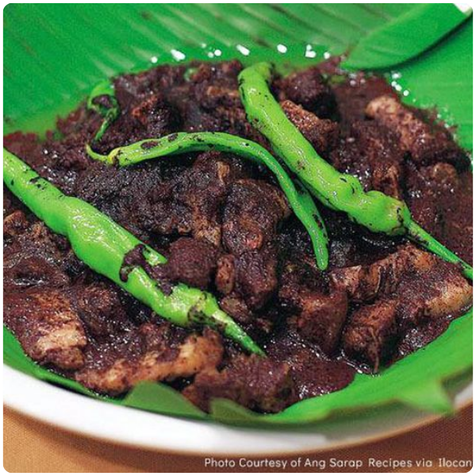
The Ilocano version of dinuguan — a rich, dark pork blood stew cooked with vinegar and spices. Savory, thick, and deeply satisfying. Traditionally eaten with white rice or puto (steamed rice cake).
Traditional carinderias in Vigan City and surrounding towns
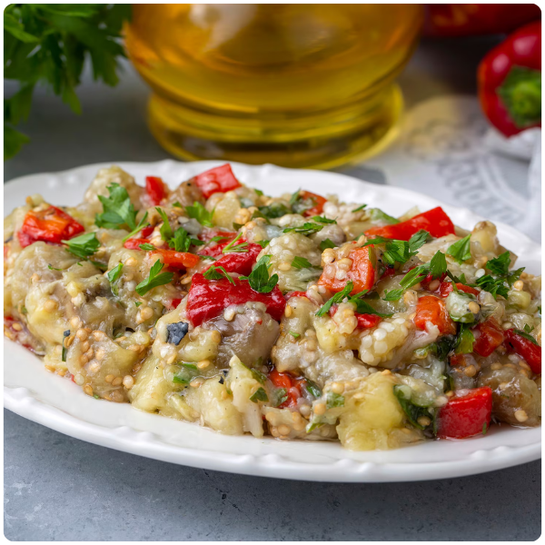
A smoky Ilocano eggplant dish — roasted eggplant mashed and stir-fried with egg, tomatoes, and onion. Simple, rustic, and incredibly delicious. One of the most comforting everyday dishes in Ilocos Sur.
Home-style restaurants and carinderias province-wide
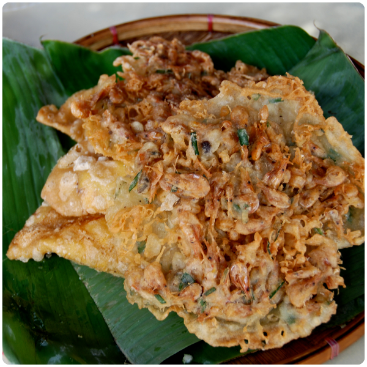
Crispy shrimp and bean sprout fritters unique to the Ilocos region. Golden and crunchy on the outside, soft inside — served with spiced sukang Iloko for dipping. A popular street snack and pulutan.
Street food stalls near Plaza Burgos, Vigan City
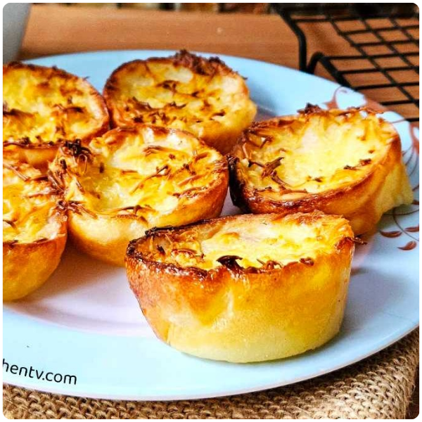
The Ilocano version of bibingka is denser and less sweet than other regional varieties — made from glutinous rice, coconut milk, and brown sugar, baked to a golden caramelized finish. A classic holiday and fiesta treat.
Bakeries and market stalls across Ilocos Sur, especially during fiestas
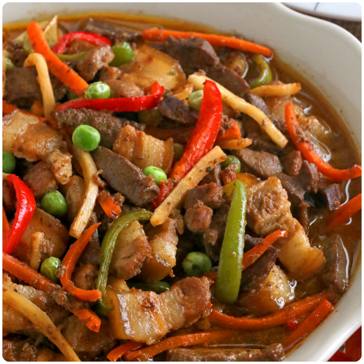
A classic Ilocano pork and liver dish cooked with vinegar, soy sauce, and bell peppers. Tangy and savory, igado is a fiesta staple and one of the most requested dishes at every Ilocano celebration.
Heritage restaurants in Vigan City, home kitchens province-wide
Ready to Eat?
Ask us for the best food spots and a curated foodie itinerary for your Ilocos Sur trip.